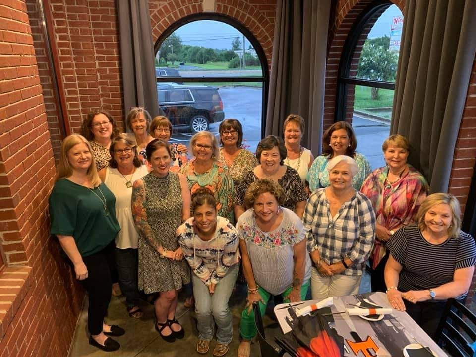
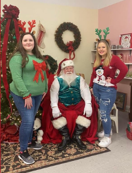

What We Do
|  | OUR MISSION: WROC is a faith-based organization through which women empower women to help those in need. As a non-profit organization of Christian women who desire to give of themselves through service for the good of others. We want to break down all divisive walls such as age, denomination or race in order to do God’s work where there is need. |
Upcoming Events

Monthly Spotlight
|  | WROC loves its volunteers! The Perry High School FBLA has been active in activities with WROC since 2020. One of the favorites is helping Santa at Re-New each year. Pictured here are FBLA members Kelsie Pugh and Kayla Kennedy helping with Santa last year. Be sure to join us this year on December 17th from 10AM to 2PM at Re-New! |
Details
|
ADDRESS: 1205 Ball Street |